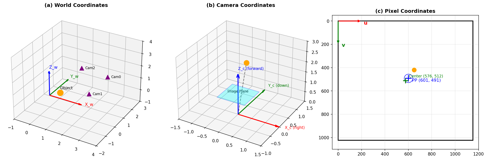
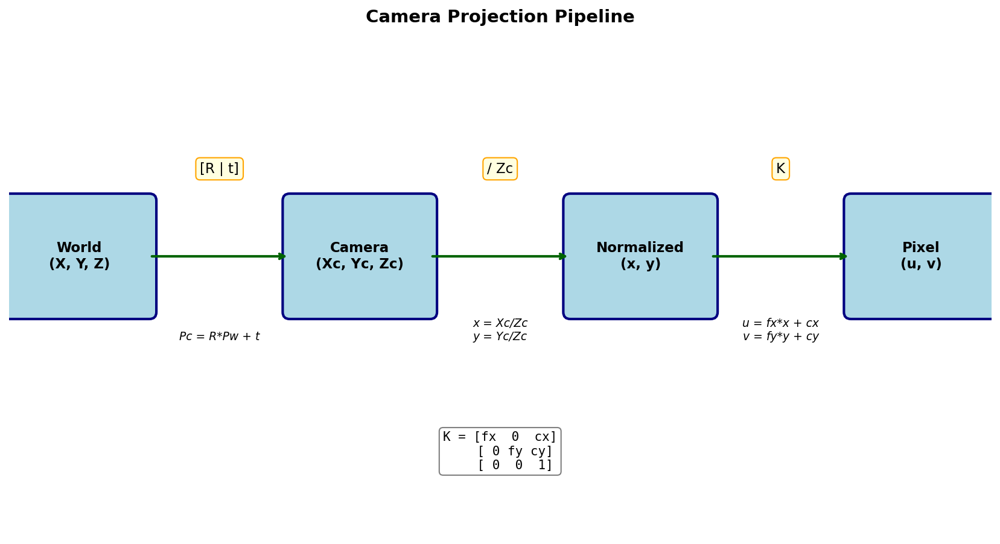
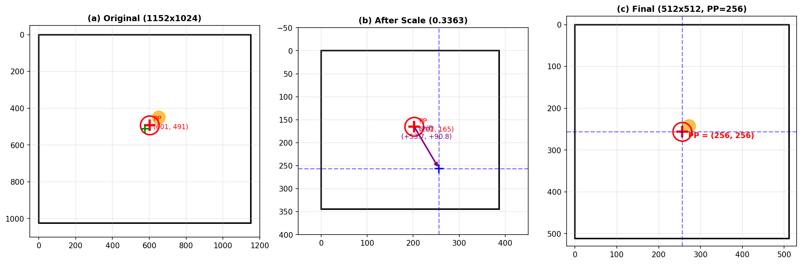
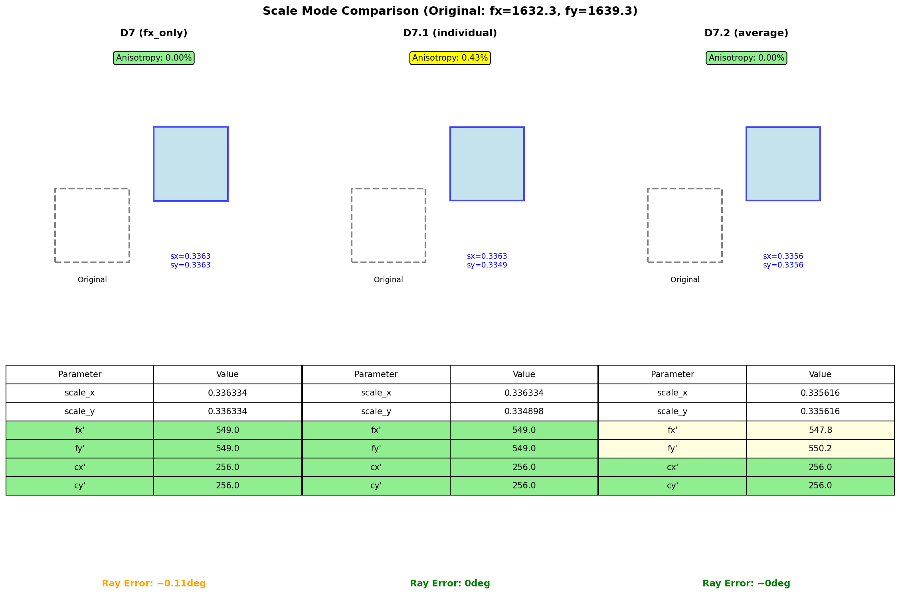
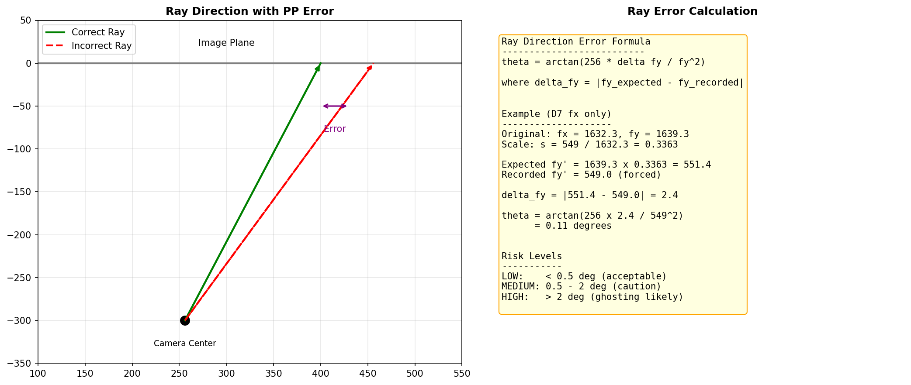

Generated: 2026-01-20 17:54
Camera: fx=1632.3, fy=1639.3, cx=601.3, cy=491.2

Figure 1: World, Camera, and Pixel Coordinate Systems
3D 공간의 절대 좌표계. 모든 카메라와 객체의 위치를 정의.
X_c: 오른쪽, Y_c: 아래쪽, Z_c: 카메라 시선 방향 (광축)
Principal Point (cx, cy): 광축이 이미지와 만나는 점

Figure 2: Camera Projection Pipeline
where:
\[ \mathbf{K} = \begin{bmatrix} f_x & 0 & c_x \\ 0 & f_y & c_y \\ 0 & 0 & 1 \end{bmatrix} \]
Figure 3: PP-Centered Shift Process

Figure 4: D7, D7.1, D7.2 Comparison
| Mode | scale_x | scale_y | fx' | fy' | Ray Error |
|---|---|---|---|---|---|
| D7 (fx_only) | 0.336334 | 0.336334 | 549.0 | 549.0 | ~0.4° |
| D7.1 (individual) | 0.336334 | 0.334898 | 549.0 | 549.0 | 0° |
| D7.2 (average) | 0.335616 | 0.335616 | 547.8 | 550.2 | ~0° |

Figure 5: Ray Direction Error Analysis
D7.1 (individual): Ray error = 0, geometrically correct
Generated by coordinate_report_generator.py | 2026-01-20 17:54